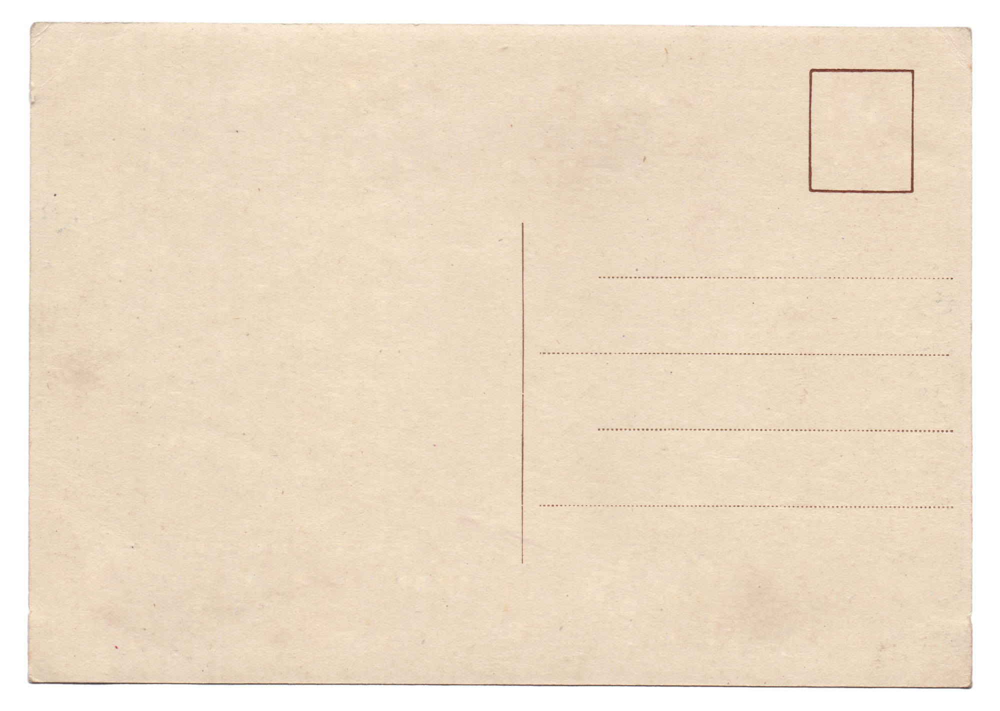

------------------------------------------------------
Color = [A B C D]
Swap:Function
Swap(A)= B Swap(B)= C Swap(C)= D Swap(D)= A
Edge = {[Color@] [Color@]}
Graph = [x,&(Collection..x) = [Color Edge]]
Proof = x:Graph -> {
i:[Nat < (#x)] = 0
i, n -> {
? @(x..n..0) = @(x..n..1)
(x = This, _ -> {
Swap x..n..1
... Proof x
})
... This i + 1
}
x
}
This code demonstrates the basic features of ASC by giving a proof of
the Four Color Theorem, the first mathematical theorem to be proven by a computer.